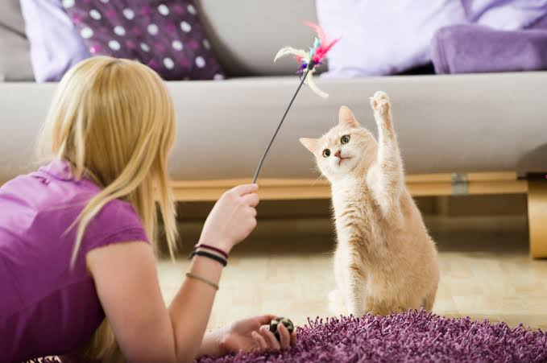

At Happy Tails Pet Care, we believe that every pet deserves love, care, and a happy home. Our mission is to provide healthy pets and high-quality pet care products and services to ensure the well-being of your furry, feathered, and finned friends.
We offer a wide range of pets, premium pet food, grooming services, toys, accessories, and healthcare essentials. Our friendly and knowledgeable team is always ready to help you choose the best products and provide expert advice for your pet's needs.
Customer satisfaction and animal welfare are our top priorities. We are committed to creating a safe, clean, and welcoming environment where both pets and their owners feel comfortable and valued.